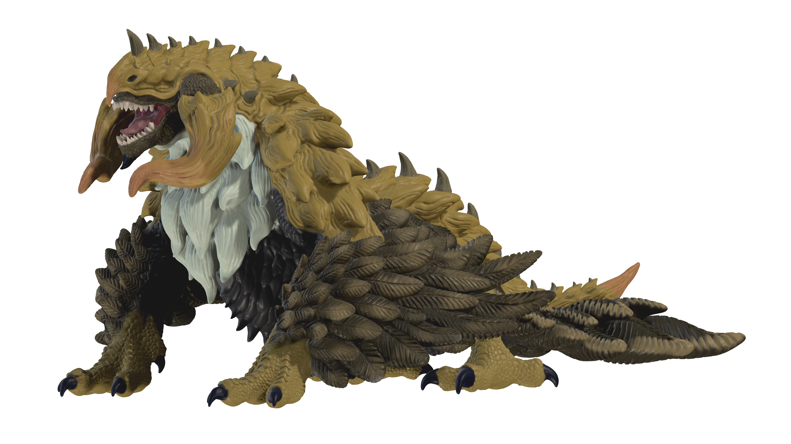

ー BASIC INFORMATION ー

・作品名：「 猛禽竜２ 」（英名：「Eagle Wyvern２」）
・作者名：由貴（よしき）
・制作年月：２０２６年８月〜２０２６年９月
・技法 / 素材 / 仕様：デジタル造形 / ABS / 全身彫刻
・寸法（本体サイズ）：１４９×１１１×８３mm
ー WORK SUMMARY ー
２０２６年８月末から制作を開始し、同年９月まで制作。
猛禽類と爬虫類とのハイブリッド生物としてデザインされた猛禽竜。
standard modelにて既に立体化済みですが、その猛禽竜をデザイン時点から見直しを行い、新たに作り直されたモデルになります。
さらに磨かれた細部の造形と生物デザインに、再度ぜひご注目ください。
ー REDESIGN ー
概要の通り、本作品は既に立体化済みのStandard modelの「猛禽竜」（Eagle Wyvern）を新たに再構築したものとなります。
そのため、既存のデザインから造形までを全て一新しました。
デザインをし直していく過程で、頭部のようにあまり変化のない部位から胴体や前脚など大きく変化した部位まで様々でした。
特に前脚は、構造の面から見直しを行い大きく形状が変化しているかと思います。
以前は、親指が欠落しており、親指を除いた4本指で構成されていました。（小指は翼と一体化しているため不可視）
しかし、現在のモデルでは親指を追加し、翼と一体化している小指を合わせて5本指となるように再構成しました。
また、翼の構成に関しても実際に飛ぶことができない（偽翼）ようなものにしつつも、実在する鷲などの翼を参考に体色も含め、再構成・修正を行いました。
ー RESCULPT ー
デザインの変更に伴い、既存の猛禽竜の3Dモデルを一から作り直すことにしました。
前回のサイズ感や自身の技術ではできなかった表現を新たに追加し、再び細部の掘り込みに注力しました。
細部のみならず、新デザインの考案と並行して全体的なシルエット（形状）に関しても再度見直しを行い、
より生物として美しくかつ強靭さが表れるようなものに仕上げています。
特に頭から胴体にかけてのシルエットは、従来のモデルの良さを引き継ぎつつも新たな猛禽竜としての一面を追加しています。
また、今回は台座のような補助パーツはなくDesktop modelとしての作品のため、据え置きの怪獣フィギュアのようなものを目指し制作しました。